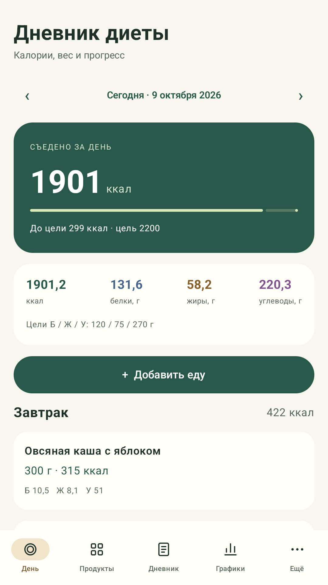
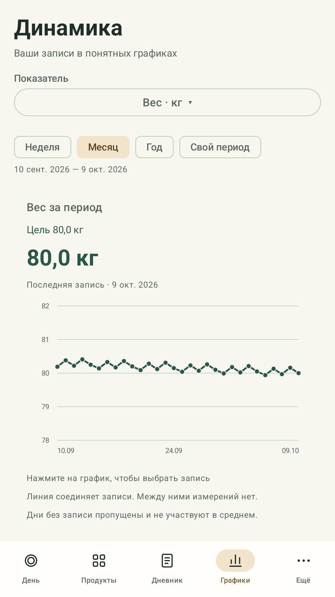

Считайте калории и БЖУ, записывайте вес и наблюдайте за своими привычками в одном дневнике.
Приложение для Android 8.0 и новее. Выберите продукт или готовое блюдо, введите массу в граммах — порция и её пищевая ценность появятся в дневнике выбранного дня.
Расчёты и записи работают без интернета и регистрации. Синхронизация через Google Drive подключается по желанию. Приложение содержит рекламу.

Реальный экран · демонстрационные данные
Каждый день — в своём ритме
От порции еды до понятного графика
01
Питание и блюда
Встроенная база продуктов, редактирование значений на 100 г, собственные продукты и готовые блюда. Можно собрать рецепт из ингредиентов и указать вес после приготовления.
Порции сохраняются по датам и приёмам пищи. Записи можно исправлять и удалять.
02
Личные измерения
Вес, талия, процент жира, шаги, сон, силовая тренировка и заметка. Все показатели необязательны: достаточно записать то, что важно сегодня.
Шаги, сон и измерения вводятся вручную. Подключения к часам, весам и Health Connect нет.
03
История и цели
Цели по калориям, БЖУ и весу, графики за неделю, месяц, год или свой период, сравнение со вчерашним днём и достижения за ведение дневника.
Светлая и тёмная темы следуют настройкам телефона.

История измерений на графике
Ваши записи остаются под вашим контролем
Основной дневник хранится на устройстве. Его можно сохранить в JSON-файл и восстановить из выбранной резервной копии.
Не нужно заполнять все поля или подключать аккаунт, чтобы начать. Значения продуктов справочные — уточняйте их по упаковке, а цели задавайте самостоятельно.
Google Drive нужен для сохранения копий дневника и объединения записей на ваших устройствах.
В приложении откройте «Ещё» → «Облачная синхронизация» и выберите подключение Google.
В браузере Google выберите аккаунт и подтвердите запрошенные разрешения. Пароль вводится на стороне Google.
Приложение сохраняет и читает собственные JSON-снимки в скрытом хранилище этого приложения на вашем Диске. Автосинхронизацию можно выключить.
Выбранный аккаунт
Разрешения openid и email позволяют определить Google-аккаунт и показать его адрес в настройках подключения.
Только данные дневника
Разрешение https://www.googleapis.com/auth/drive.appdata даёт доступ к собственному хранилищу приложения. Оно не открывает обычные документы и фотографии на вашем Google Drive.
Синхронизируются продукты, питание, измерения, заметки, цели, достижения и служебные метаданные изменений. Содержимое дневника и полученные от Google данные не используются приложением для рекламного таргетинга, продажи данных или обучения ИИ. Приложение не создаёт изображения и не предоставляет функции генеративного ИИ.
При отключении аккаунта локальный дневник и облачные копии сохраняются. Для полного удаления предусмотрена отдельная инструкция по очистке данных.
Дневник диеты is an Android calorie and macronutrient diary developed by Efreitor2001. Users enter food portions in grams, calculate recipes, record optional weight, waist, steps, sleep and workout information, and view their history and charts. Core features work offline without an account.
Optional Google sign-in and Google Drive synchronization use openid, email and https://www.googleapis.com/auth/drive.appdata. The app receives the selected account’s email address and identifier, and reads and writes its own diary snapshots in that account’s hidden app-data folder. It cannot access unrelated Drive documents or photos.
Google user data is used only for account connection and diary synchronization. It is not sold, used for advertising, or used to train AI or machine-learning models. The app has no image generation or generative AI features. There is no developer-operated server that receives diary contents.
The Android app contains Yandex advertisements. Advertising requests are separate from Google account and diary data. This informational website is public and requires no sign-in.
Разработчик: Efreitor2001. Название приложения: Дневник диеты. Пакет Android: ru.dietdiary.offline.
По вопросам приложения, Google-подключения или удаления данных: pokimoha.123@gmail.com. Ошибку также можно описать в репозитории проекта. Не прикладывайте пароли, токены и личный дневник.
Приложение не является медицинским изделием. Оно не диагностирует, не лечит, не излечивает и не предотвращает заболевания. За медицинскими рекомендациями, диагностикой и лечением обращайтесь к квалифицированному врачу.